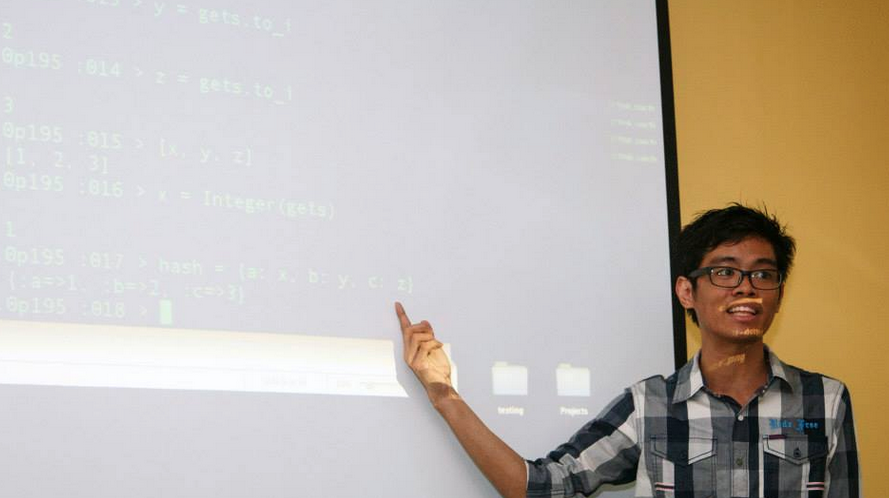
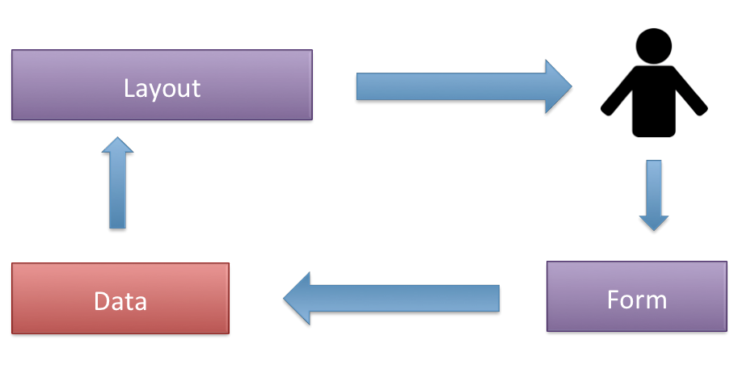
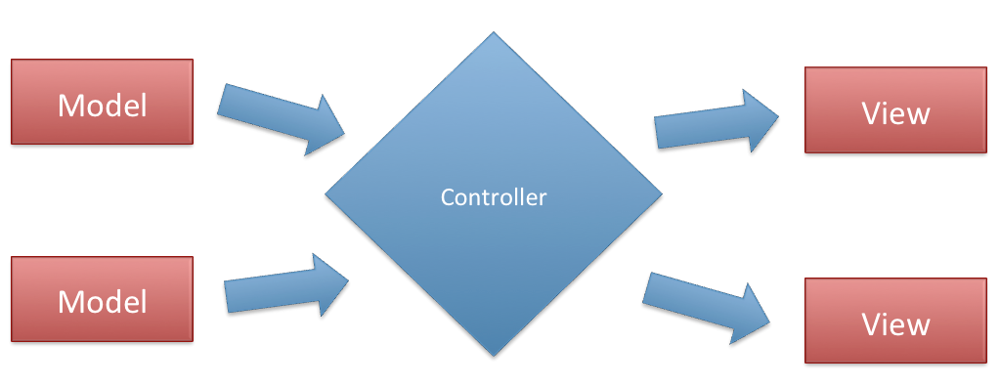

4-day training course
Last year, I was invited to teach the Ruby programming language and the Rails framework to UP Computer Science students. UP Center for Student Innovations (CSI) needed a resource speaker for 4 Saturdays and I happened to be available on those dates.

Teaching Ruby
Teaching the basics of a new programming language is a challenge. It is crucial for the students to learn Ruby without getting bored since it would be hard to learn Rails without learning Ruby first.
# display Hello World
puts "Hello World"
# get string input from the user
x = gets
# display value of x
puts x
I decided to teach Ruby by example and make the students solve the problems in pairs. Prizes were given to those who were able to solve the quizzes. Pair programming, pressure, and incentives allow students to learn faster. They may hate the pressure but it makes them learn a lot faster.
Most of the students knew Python already so I included a couple of slides on how to convert Python to Ruby.
#!/usr/bin/python
for i in [1, 2, 3, 4, 5, 6]:
print i
if i == 3:
print "The value of i is 3"
if i == 5:
print "The value of i is 5"
The hardest parts to teach are Blocks, Procs, & Lambdas. I told the students that Procs and Lambdas are the same except for a couple of rules. Lambdas check the number of arguments while Procs do not. The return keyword is also treated differently.
def lambda_no_return
lm = lambda { return }
lm.call
puts "lambda did not return"
end
def proc_return
pr = Proc.new { return }
pr.call
puts "proc did not return"
end
lambda_no_return
proc_return
I ended the session with a couple of real world examples and taught them a few lessons on how to refactor code.
Teaching Rails
Teaching Rails involves teaching the MVC: Model-View-Controller pattern and how Rails applications are created and maintained. I started off with why most web developers should use a web framework instead of building their own. I also shared some of my experiences as a web developer so that the students are aware of some misconceptions they might have.
I focused on how the MVC pattern works. I gave a real world scenario and told them that the MVC pattern attempts to separate the concerns to make code easier to maintain.

I presented a simplified diagram of the MVC pattern so that those who were new to the concept would understand the topic easily. It is critical for the students to understand the MVC pattern first before they try out the Rails framework.

The rest of the lecture series involved web application development with the Rails framework. The students got to try out first how the View and the Controller interacts without the Model aspect. After a couple of steps, they were able to transfer some of the lines of code from the Controller to the Model components.
Experience
As a trainer, I learned a lot of things during the 4-day training course. I realized that I had to limit each module to 20 minutes and allow the students to participate by writing code and solving problems on their own. Ten minute breaks were also necessary to make sure that the students do not get bored while learning the important parts.
Teaching is fun and it feels great when your students are applying the things they learned.